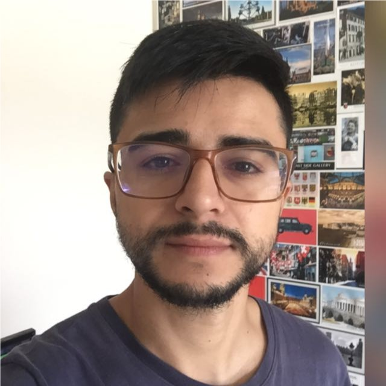

Atendimento psicológico online e presencial em Porto Belo/SC e Santa Maria/RS. Há mais de 12 anos acompanho crianças, adolescentes e adultos em processos de cuidado, desenvolvimento e autoconhecimento — com escuta atenta e sem julgamentos.

A terapia pode ser um espaço de transformação e reorganização emocional. Meu objetivo é oferecer um atendimento seguro, humano e respeitoso, com foco no seu bem-estar e na construção de caminhos mais claros.
Minha trajetória passa pela psicologia clínica, hospitalar e escolar — o que me permite acompanhar pessoas em diferentes momentos e contextos. Alguns dos temas que atendo:
Comportamento, emoções, desenvolvimento e apoio às famílias no dia a dia.
Autoestima, relações, identidade e os desafios próprios dessa fase.
Ansiedade, sobrecarga, momentos de transição e autoconhecimento.
Aprendizagem, adaptação escolar e a relação entre aluno, família e escola.
Suporte a pais, responsáveis e famílias que enfrentam momentos delicados.
Um espaço para se entender melhor e construir escolhas mais conscientes.
O processo é pensado para que você se sinta à vontade desde o primeiro contato, com um espaço seguro para falar, refletir e encontrar novos caminhos.
Você me envia uma mensagem e conversamos sobre o que está trazendo você até aqui.
Nosso encontro começa com escuta, respeito e atenção às suas necessidades e à sua história.
Juntos, construímos um acompanhamento que faz sentido para o seu momento e para o seu ritmo.
Sou psicólogo formado pela Universidade Franciscana (UFN), em Santa Maria/RS. Minha jornada começou na psicologia de grupos e na área hospitalar, com atenção a crianças internadas na pediatria e a seus cuidadores — uma experiência que moldou o cuidado atento que levo até hoje para o consultório.
Desde 2014 atuo com atendimentos clínicos individuais, presenciais e online, para todas as faixas etárias. Já em Santa Catarina, tive quase dois anos de experiência em psicologia escolar no ensino fundamental, acompanhando alunos, professores e responsáveis. Atualmente sigo com os atendimentos individuais e curso pós-graduação em Psicologia Escolar e da Educação na PUC-RS.
Cada etapa somou um jeito diferente de escutar e cuidar das pessoas.
Coordenação de grupo de mães de crianças com necessidades especiais, no campo da fisioterapia.
Suporte psicológico a pacientes internados na pediatria e a seus cuidadores.
Atendimentos individuais de adultos, crianças e adolescentes — presencial e online — desde 2014.
Quase dois anos no ensino fundamental, com atenção a alunos, corpo docente e responsáveis.
Você pode entrar em contato por WhatsApp, e-mail ou Instagram para tirar dúvidas, marcar uma conversa inicial ou pedir informações sobre o atendimento.
Atendo todas as faixas etárias — crianças, adolescentes e adultos. Minha experiência clínica, hospitalar e escolar me permite acompanhar cada fase com o cuidado que ela pede.
Os atendimentos acontecem por videochamada, num ambiente seguro e privativo. Você só precisa de um lugar tranquilo e conexão com a internet — com a mesma qualidade do presencial.
Atendo presencialmente em Servidão Renor Gonçalves, 39 — Vila Nova, em Porto Belo/SC, e também em Santa Maria/RS. Para quem prefere ou mora em outra região, ofereço atendimento online.
Cada sessão dura em torno de 50 minutos. A frequência costuma ser semanal, mas ajustamos conforme a sua necessidade e o seu momento.
Basta clicar em “Agendar conversa” e me enviar uma mensagem. Respondo pessoalmente para combinarmos o melhor horário e tirar suas dúvidas.
Totalmente. O sigilo é um dever ético e profissional — tudo o que você compartilha permanece protegido.
Se você chegou até aqui, talvez seja a hora. Me envie uma mensagem — sem compromisso — e vamos encontrar juntos o melhor caminho, para você ou para quem você quer cuidar.